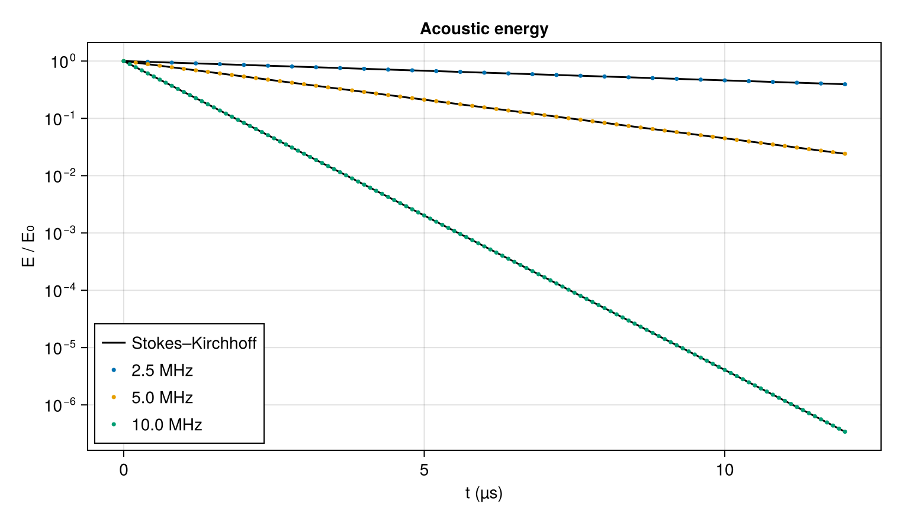

Sound absorption
Sound loses energy as it travels. Viscosity resists the alternating compression and shear of the gas, and heat flows from the compressed, warmer parts of the wave to the expanded, cooler ones; both convert acoustic energy into heat. Stokes (1845) and Kirchhoff (1868) derived the resulting decay for a wave of small amplitude and wavenumber $k$: its amplitude falls as $e^{-\alpha t}$ with
\[\alpha = \frac{k^2}{2\rho}\left(\frac{4}{3}\mu + \frac{\gamma - 1}{c_p}\,\kappa\right),\]
where $\mu$ is the shear viscosity and $\kappa$ the thermal conductivity. The rate grows with the square of the frequency, which is why absorption limits the range of ultrasound far more than that of audible sound. In air, the vibrational relaxation of oxygen and nitrogen adds an absorption larger than this classical one at most audible frequencies. A monatomic gas has no vibrational or rotational energy to relax, so the classical absorption is the whole of it, and measurements in the noble gases agree with the formula while the frequency stays well below the rate of molecular collisions.
This tutorial asks how quickly ultrasound of a few megahertz fades in argon at room conditions, and compares three frequencies with the classical rate.
using CompactLES # re-exports MPI
MPI.Initialized() || MPI.Init(threadlevel=:funneled)
using CairoMakie
using Printf
CairoMakie.activate!(type = "png")Gas
Given only a species name, IdealSpecies takes the gas constant from the bundled NASA-9 data and holds the heat capacity at its 298.15 K value; for argon the heat-capacity ratio is exactly 5/3. ConstantTransport sets a constant viscosity and a Prandtl number $\mathrm{Pr} = \mu c_p / \kappa$, from which the conductivity follows. The values below are those of the NASA CEA transport fits bundled with CompactLES for argon at 300 K. Molecular transport is off unless a Problem is given a transport model; the earlier tutorials had none.
eos = IdealSpecies("Ar")
transport = ConstantTransport(mu0 = 2.273e-5, Pr = 0.665)
p0, T0 = 101_325.0, 300.0
gas = thermodynamic_state(eos, Prim(p = p0, T_ion = T0))
rho0, c0 = gas.rho, gas.c
gamma = eos.gamma
@printf("argon: ρ %.4f kg/m³, c %.1f m/s\n", rho0, c0)argon: ρ 1.6228 kg/m³, c 322.6 m/sThe classical rate needs $(\gamma - 1)\kappa / c_p = (\gamma - 1)\mu / \mathrm{Pr}$:
mu, Pr = transport.mu0, transport.Pr
classical(k) = k^2 / (2rho0) * (4 / 3 * mu + (gamma - 1) * mu / Pr)Wave
A traveling wave of pressure amplitude 10 Pa, $10^{-4}$ of the ambient pressure, fills a periodic domain one wavelength long. As in Acoustic interface, the density and velocity disturbances of a wave traveling toward $+x$ are $p'/c^2$ and $p'/(\rho c)$. The grid has 64 points per wavelength and the numerics are the defaults.
function simulate(frequency; periods = 60)
wavelength = c0 / frequency
k = 2pi / wavelength
wave(x) = 10.0 * sin(k * x)
problem = Problem(
name = "sound absorption in argon",
eos = eos,
transport = transport,
domain = ((0.0, wavelength), (0.0, 1.0), (0.0, 1.0)),
bcs = (PeriodicBC(), PeriodicBC(), PeriodicBC()),
ic = (x, y, z) -> Prim(p = p0 + wave(x), rho = rho0 + wave(x) / c0^2,
u = (wave(x) / (rho0 * c0), 0.0, 0.0)),
)
solver, Q = setup(problem, Numerics(n_global = (64, 1, 1)))
times, energies = Float64[], Float64[]
record = Callback(EveryTime(1 / frequency), function (solver, Q)
x, p = line_profile(solver, Q, :p)
_, u = line_profile(solver, Q, :u)
p_mean, u_mean = sum(p) / length(p), sum(u) / length(u)
e = @. (p - p_mean)^2 / (2rho0 * c0^2) + rho0 * (u - u_mean)^2 / 2
push!(times, solver.t)
push!(energies, sum(e) / length(e))
nothing
end)
run!(solver, Q; tfinal = periods / frequency, nmax = 100_000, callback = record)
return (; k, times, energies)
endEnergy
The callback records the mean acoustic energy density, $\tfrac{1}{2} p'^2/(\rho c^2) + \tfrac{1}{2}\rho u'^2$, once per period. Since the energy goes as the square of the amplitude, it decays as $e^{-2\alpha t}$.
A sound wave carries momentum as well as energy, $E/c$ per unit volume. As the wave is absorbed, its energy heats the gas and raises the mean pressure, by about $10^{-4}$ Pa here, and its momentum stays in the gas as a uniform drift, about $6 \times 10^{-7}$ m/s at the end of the 10 MHz run. Both are second order in the amplitude, but once the wave has decayed by several orders of magnitude they are no longer small against it, so the disturbances $p'$ and $u'$ are taken from the mean pressure and the mean velocity.
Three frequencies, each twice the last, run for the same 12 µs, sixty periods at 5 MHz.
frequencies = [2.5e6, 5e6, 10e6]
runs = [simulate(f; periods = 60 * f / 5e6) for f in frequencies]
fig = Figure(size = (760, 440))
ax = Axis(fig[1, 1], xlabel = "t (µs)", ylabel = "E / E₀", yscale = log10,
title = "Acoustic energy")
for (f, r, color) in zip(frequencies, runs, Makie.wong_colors())
lines!(ax, 1e6 .* r.times, exp.(-2classical(r.k) .* r.times), color = :black,
label = f == frequencies[1] ? "Stokes–Kirchhoff" : nothing)
scatter!(ax, 1e6 .* r.times, r.energies ./ r.energies[1], color = color,
markersize = 5, label = @sprintf("%.1f MHz", 1e-6f))
end
axislegend(ax, position = :lb)
fig
Lines are the classical decay. Doubling the frequency makes the decay four times faster. The measured amplitude decay rates, from the energy at the start and end of each run, compare with the classical ones as follows:
for (f, r) in zip(frequencies, runs)
measured = log(r.energies[1] / r.energies[end]) / (2 * r.times[end])
@printf("%4.1f MHz: α = %.4e 1/s, classical %.4e 1/s (%+.3f%%)\n", 1e-6f,
measured, classical(r.k), 100(measured / classical(r.k) - 1))
end 2.5 MHz: α = 3.8788e+04 1/s, classical 3.8787e+04 1/s (+0.001%)
5.0 MHz: α = 1.5515e+05 1/s, classical 1.5515e+05 1/s (-0.000%)
10.0 MHz: α = 6.2058e+05 1/s, classical 6.2059e+05 1/s (-0.001%)The rates agree to within 0.001% at all three frequencies. Neither the artificial properties nor the filter, both on by default, contributes: turning them off leaves every printed digit unchanged, as does doubling the number of grid points.
A wave traveling at $c$ loses amplitude over a distance $c/\alpha$. At 5 MHz in argon at atmospheric pressure that distance is
@printf("%.1f mm\n", 1e3 * c0 / classical(runs[2].k))2.1 mma few tens of wavelengths, which is why gas-phase ultrasound at these frequencies reaches only short distances. The kinematic viscosity is inversely proportional to the density, so at a lower pressure the same frequency is absorbed faster still.
What this checks
- Molecular viscosity and heat conduction remove acoustic energy at the Stokes–Kirchhoff rate, and the rate scales with the square of the frequency.
- The default regularization leaves a resolved wave untouched.
This page was generated using Literate.jl.